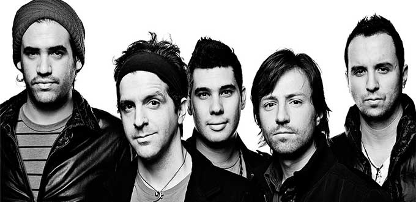

Los Claxons es una banda mexicana de Rock/Pop, originaria de Monterrey, N.L. dos veces nominada al Grammy Latino. Está compuesta por Ignacio “Nacho” Llantada (voz, guitarra y pianos), Mauricio Sánchez (voz y guitarra), Pablo González (Bajo), Edgar “Cholo” Lozano (guitarra eléctrica) y Cesáreo Castillo (batería).
Historia
La banda comenzó en el mundo de los centros nocturnos y de la escena musical universitaria. Su popularidad local logró llamar la atención de muchos seguidores que se fueron multiplicando de tocada en tocada.
